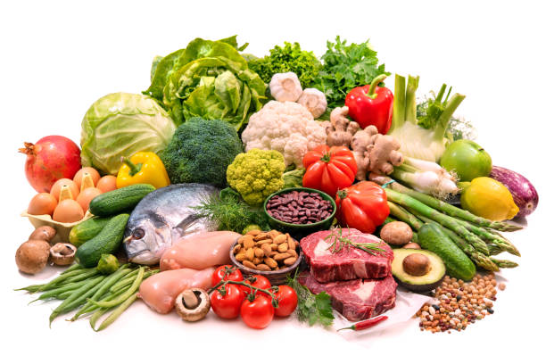
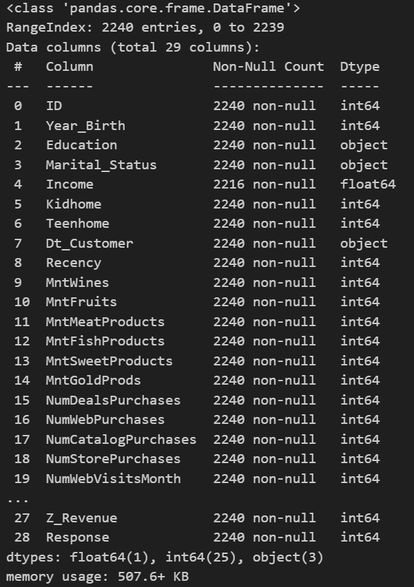
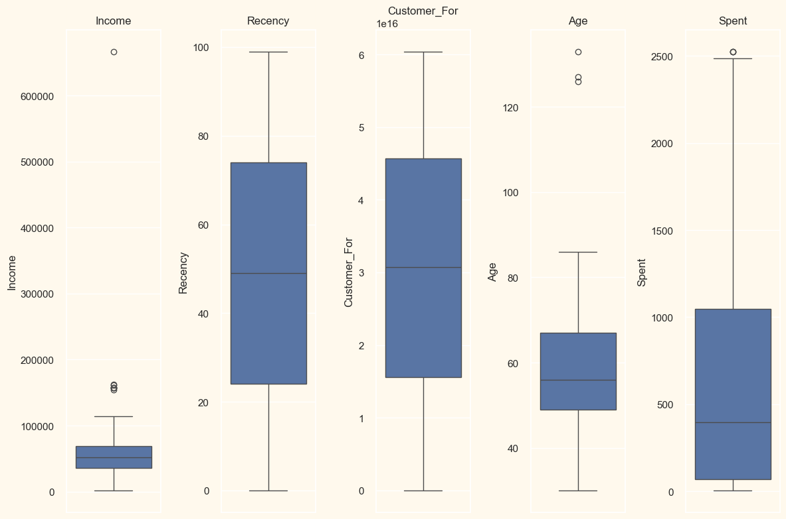
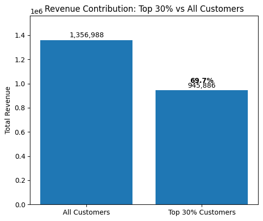
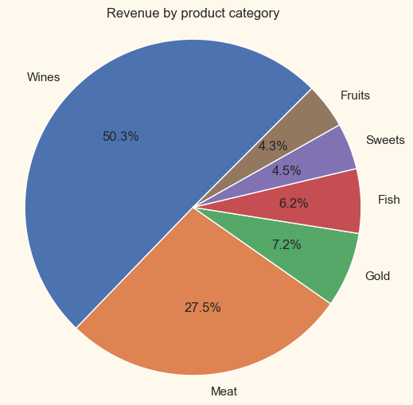
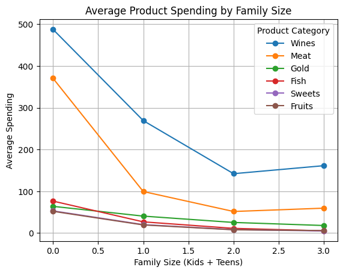
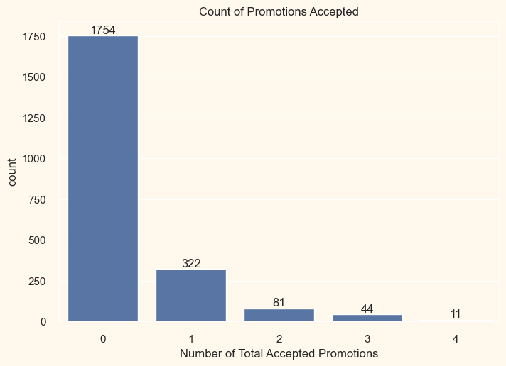
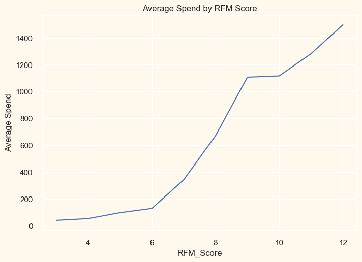
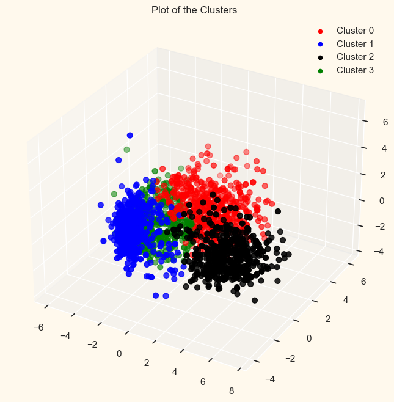
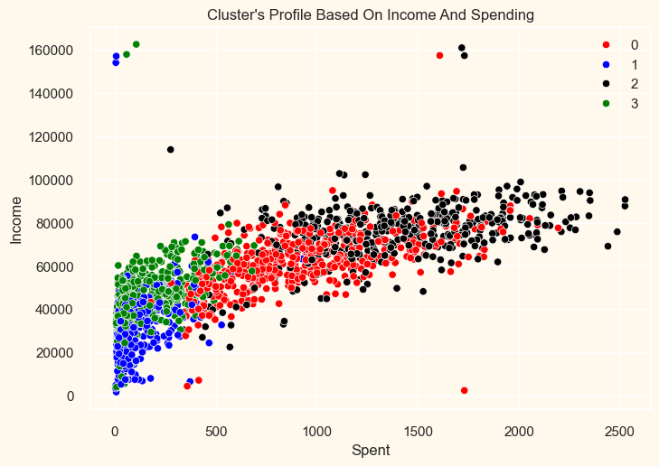

In this project we will analyze the marketing campaign data of a grocery store for
the sake of extracting useful information that will help increase the store's profitability.
In general, marketing campaign data can reveal very actionable insights if we look
at the right things. We will be employing a road map for practically
analyzing the said data in Python using ML.


A well-known marketing campain data of a grocery store, namely marketing_campaign.csv, obtained
from #Github was loaded and inspected using the appropriate python modules
and techniques. Further inspection and structure investigation were also done. The crucial data cleaning was
also performed to remove null and/or NaN entries.

Investigation of the categorical data was done and also some feature engineering like combining columns,
creating new ones, renaming some columns and deleting repeated ones were also done. This is to prepare
the data for ML techniques. Moreover, outliers were found and removed by setting a cap on the
appropriate features. Additional feature engineering like encoding (using LableEncoder())
and scaling (using StandardScaler()) were done.

Since all customers are not equally profitable, we need to identify those who spend high
in addition to those who visit the store frequently. After feature engineering, we were
able to know the spending ability of the customers and identify high-spenders.
By computing mean, median and max of the spendings, we were also able to realize the existence of strong spending imbalance.
It is worth mentioning that the top 30% help generate 70% of the total revenue. They are 665 (out of 2212)
in number and we recommend to design personalized campaigns for them. Moreover, the frequencies of the customers
were calculated which helped as identify the regular visitors of the store. It is recommended to invest marketing
budget on high-sepnders and frequent visitors.

Wine and Meat are the core profit engines. Wine being the dominant revenue driver. These two are responsible for 50% and
28% of the total revenue, respectively. Therefore, it is recommended to feature wine and meat bundles in the
marketing strategy. The analysis in this section tells us to promote wine and premium products for small families
while bulk meat and food bundles for large families. Moreover, smaller families tend to have higher per-household
spending whereas larger families spend more on necessities, less on premium items. These imply that it also helps
to design family-size specific promotion strategies.

Here we analyze how much the conducted campaign was effective. It is observed that some campaigns perform better
than others but most customers don't accept any campaign (1754 out of 2212) implying the existence of a campaign
fatigue. Therefore, it is wise to focus on customers who accepted at least one past campaign (only 136 out of 2212)
and stop sending campaigns to chronic non-responders.

The RFM analysis helped us to categorize the customers as Champions or profit gold (with RFM 11-12),
Loyal (RFM 9-10), At-risk (RFM 6-8) and Lost (RFM 5 or less). Therefore, by mapping the customers with their
RFM scores, we might design VIP programs for customers with RFM 9 and higher, win-back campaign for those with
RFM 6-8 and stop expensive marketing for RFM 5 and less.

First off, the correlation matrix heatmap was plotted for the sake of identifying highly correlated features.
Thereafter, we used PCA in collaboration with Agglomerative Clustering and the
Elbow method to calculate the optimal number of clusters, which we found to be 4. It is observed that the clusters were more
or less balanced without any additional manipulation. Among the clusters, the most important ones that help
the store to generate more profit were found to be Cluster 0 (those with middle income but spend high)
and Cluster 2 (those having moderate income but are high spenders). Assuring that it is
spending that matters in the store's profit, not just income!

Using RandomForestClassifier, we were able to identify the top three important features which are
Spent (Total Spending), Recency and Income telling us that customers which purchase frequently and engage
with the store on a regular basis (and spend more) are the ones that help generate more profit.
To ensure store profitability, it is highly recommended to:
1. Focus on top spenders as they help generate 70% of the total revenue.
2. Promote Wine and Meat aggressively.
3. Design loyalty, personalized offers and/or VIP programs for customers with RFM >= 9 to retain them at all cost.
4. Work on win-back campaigns for those with RFM 6-8 and stop expensive marketing on customers with RFM 5 and less.
5. Allocate more campaiging budget for customers in Cluster 0 (those with middle income but spend high)
and Cluster 2 (those having moderate income but are high spenders).
6. Design promotion strategies that take into account the most important features (Spending, Recency and Income).
7. Avoid campaigning to non-responders.
8. Don't treat customers equally.